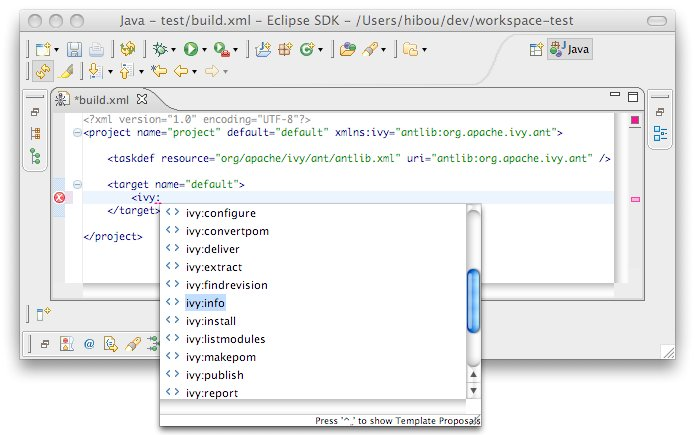

Most Eclipse distribution includes a plugin to launch ant build files. The provided Ant is a standard distribution of Ant and so it doesn't include Ivy. But you probably want to use Ivy targets within the Eclipse's Ant. <h1>Configure Ant classpath</h1> For now IvyDE doesn't contribute to the Ant classpath of the Eclipse plugin, so you will have to do it manually. In the global preference page of the Ant runtime, click on <b>Add External JARs...</b> <center><img src="images/antpref.jpg" /></center> Then browse your filesystem into the <tt>plugins</tt> directory of your Eclipse install, and select the Ivy jar named <tt>org.apache.ivy_2.X.X.XXXXXXXXX.jar</tt>. And that's it, Ivy has been added to the classpath of Ant embedded in Eclipse. <h1>Run Ivy targets</h1> Create an Ant build file and just declare the Ivy targets with: <code> <taskdef resource="org/apache/ivy/ant/antlib.xml" uri="antlib:org.apache.ivy.ant" /> </code> And don't forgot to declare the namespace <tt>xmlns:ivy="antlib:org.apache.ivy.ant"</tt>. Then you will be able to have completion on Ivy tasks: <center></center> And run successul build: <center><img src="images/antrun.jpg" /></center>